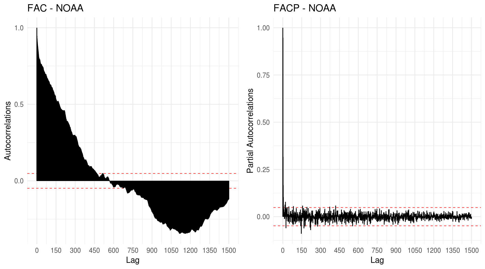
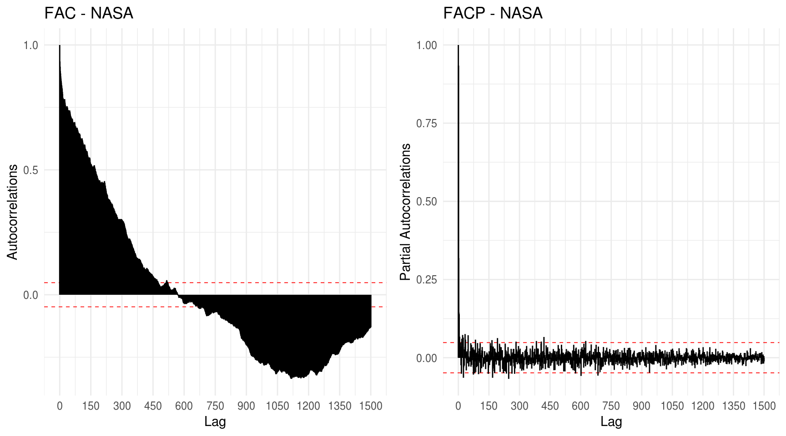
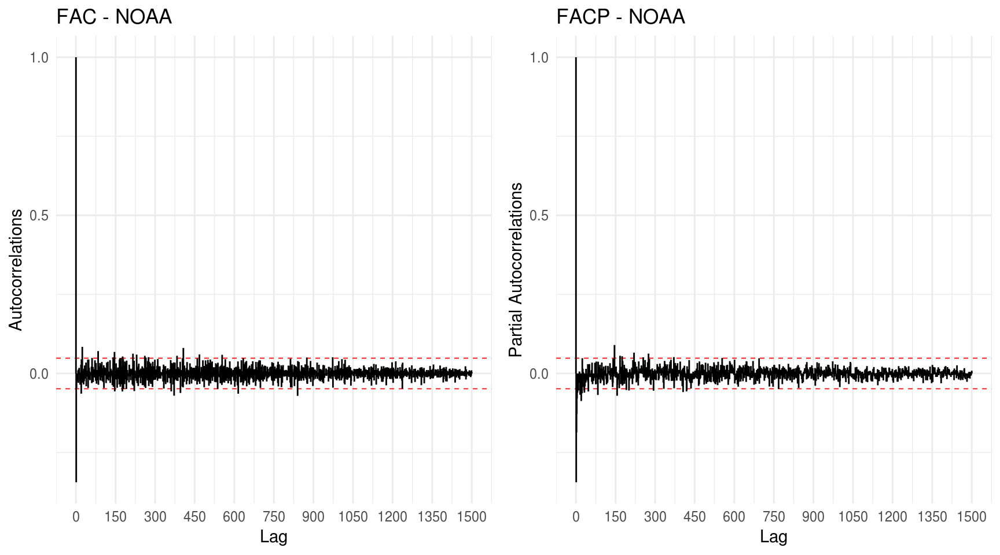
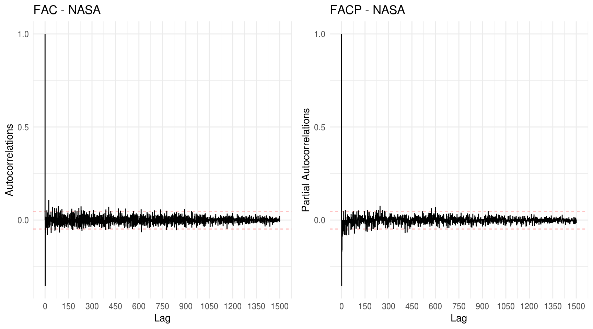
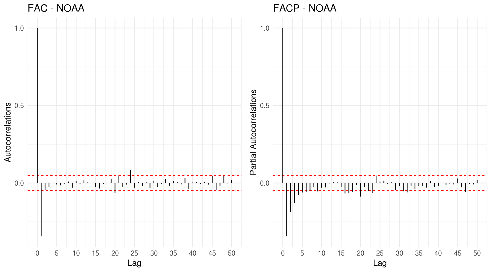
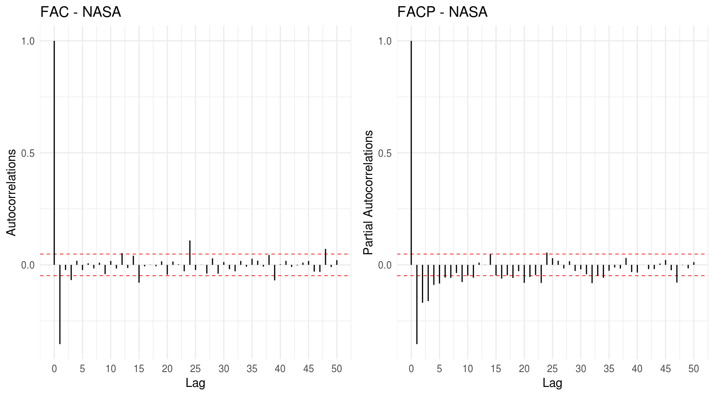

Se \(W_t\) representa a temperatura global observada no mês \(t\) (média mensal, em graus Celsius) e \(\mu\) denota uma temepratura média global constante, o arquivo \(\verb|TempGlobal.csv|\) encontrado no Aprender contém as séries históricas dos desvios \(X_t = Y_t - \mu\), registradas pela NASA (Agência Espacial Norte-Americana) e pela NOAA (Administração Atmosférica e Oceânica Nacional), desde 1980. Para a NASA, o período base para a estomativa da média \(\mu\) compreende o período de 1951 a 1980. Para a NOAA, o período base refere-se ao séc. XX.
Dados brutos antes do tratamento
Após removermos a coluna de índices dos dados diretamente no Excel, temos:
Antes de identificarmos um processo ARIMA que descreva ambas as séries, é necessário assegurarmos que ambas sejam seŕies estacionárias. Por isso, proceder-se-á a uma série de verificações de ordem exploratória nos dados visando a condição de estacionariedade, para então buscarmos um modelo.
Começamos pela plotagem das séries.
Gráficos das séries mensais:
Gráficos das séries anuais:
No que se refere à média, ambas as séries mensais aparentam comportamento não-estacionário. Seguimos com a análise das Funcções de Autocorrelação (FAC) e Autocorrelação Parcial (FACP).
Plots da FAC e FACP:


Claramente, os gráficos acima nos indicam a não existência de estacionariedade em ambas as séries. Nas FACP’s temos um comportamento de quase passeio aleatório devido a \(\rho(1) \sim 1\), o que equivale a \(X(t) \sim X(t-1)\). As FAC’s, por sua vez, além de \(\rho(1) \sim 1\), apresentam uma queda extremamente lenta indicando memória longa nos dois casos com fortes correlações. Chama atenção também um comportamento cíclico que parece se alternar a cada 600 lags - o que equivale a 50 anos. Nos primeiros 50 anos da série, temos uma sequência de correlações positivas com comportamento decrescente. A partir de 1930, aproximadamente, estas correlações passam a ser negativas e atingem seu pico 50 anos depois (por volta de 1980). Nos próximos anos que se seguem, as correlações negativas começam a diminuir em valor absoluto, indicando uma clara tendência de inversão de sinal após os próximos 50 anos.
Não cabe, no caso, realizarmos uma diferenciação de lag=600, pois perderíamos muita informação em ambas as séries. Por isso, faremos uma diferenciação apenas de primeira ordem buscando a estacionariedade nos dados. ???
Plots das séries após diferenciação de 1ª ordem:


As diferenciações de primeira ordem parecem ter surtido efeito no comportamento da série. Os gráficos da série não indicam qualquer violação de estacionariedade no quesito média. Os gráficos das FAC’s e FACP’s apresentam \(\rho(1) < 0.5\) e sem padrão sazonal ou cíclico. Eventuais lags com correlações superando as bandas de confiança podem ser considerados como valores espúrios devido a erro amostral ou creditados à ocorrência de erro tipo I.
FAZER UM TESTE DE DICKEY-FULEER PARA CORROBORAR
Para identificar melhor o tipo de modelo e um possível “chute” para sua ordem, refaremos os plots da FAC e FACP com um range menor de ** lags **.


Tanto no caso da série NOAA quanto no caso da série NASA, observa-se um aqueda abrupta da FAC e um decaimento exponencial da FACP, o que nos leva cogitar a existência de um Modelo de Médias Móveis. Contudo, nosso objetivo é conseguir um modelo que apresente o melhor ajuste aos dados. Por isso, para verificar de forma mais efetiva o tipo de modelo que temos, utilizamos os procedimentos ensinados em aula, buscando um modelo que apresente os melhores resultados em termos de previsão. Olhando para as FAC’s, podemos chutar uma ordem \(0 \le q \le 4\) para nosso modelo. Já ao olharmos para as FACP’s, podemos adotar um chute inicial \(0 \le p \le 9\).
Utilizaremos o Mean Absolute Percentage Error (MAPE) de um passo a frente como critério de otimalidade e tomando como base os últimos 12 meses.
Temos os seguintes grids resultantes do algoritmo de otimização:
| ordem | q=0 | q=1 | q=2 | q=3 | q=4 |
|---|---|---|---|---|---|
| p=0 | 8.1550 | 9.7389 | 10.0644 | 10.1234 | 10.0231 |
| p=1 | 8.4431 | 10.1098 | 8.1507 | 8.1945 | 8.2168 |
| p=2 | 9.0048 | 8.0659 | 8.2027 | 8.1980 | 8.2153 |
| p=3 | 9.1085 | 8.0038 | 8.2143 | 8.1881 | 8.1992 |
| p=4 | 9.4822 | 8.0633 | 8.1947 | 8.2052 | 8.2523 |
| p=5 | 9.7837 | 8.0869 | 8.0813 | 8.1992 | 8.2335 |
| p=6 | 10.0689 | 8.1458 | 8.1721 | 8.2124 | 8.1977 |
| p=7 | 10.1352 | 8.2839 | 8.1169 | 8.1729 | 8.2184 |
| p=8 | 10.1481 | 8.2908 | 8.2881 | 8.1621 | 8.1451 |
| p=9 | 9.9918 | 8.2988 | 8.2598 | 8.1655 | 8.1629 |
| ordem | q=0 | q=1 | q=2 | q=3 | q=4 |
|---|---|---|---|---|---|
| p=0 | 11.5822 | 13.6448 | 13.4456 | 13.2608 | 13.0067 |
| p=1 | 12.1087 | 12.9305 | 11.5798 | 11.7431 | 11.7938 |
| p=2 | 12.2334 | 11.2099 | 11.7838 | 11.5475 | 11.7531 |
| p=3 | 13.4908 | 11.197 | 11.1388 | 11.8399 | 11.7961 |
| p=4 | 13.5378 | 11.8974 | 11.9816 | 11.7654 | 11.7770 |
| p=5 | 13.5750 | 11.9675 | 11.8125 | 11.9070 | 11.6436 |
| p=6 | 13.7499 | 11.9912 | 11.9909 | 12.0445 | 12.0682 |
| p=7 | 13.6270 | 11.995 | 11.9424 | 12.0092 | 11.6501 |
| p=8 | 13.4953 | 11.9603 | 11.9553 | 11.9450 | 11.8214 |
| p=9 | 13.1181 | 11.9874 | 11.9578 | 11.9414 | 11.9964 |
ElEGER UNS 4 MODELOS QUE SERIAM OK EM CADA GRID, SEPARAR EM DADOS DE TREINAMENTO E DE TESTE E PLOTAR AS PREVISÕES PARA VER QUAL EH O MELHOR – ESCOLHER O QUE FOR MELHOR E AI FAZER AS PREVISOES DOS PROXIMOS 12 MESES COM ESTE MODELO
Com base nos grids acima, os modelos com melhores resultados estão destacados. Para a série NOAA, o modelo mais indicado seria um ARIMA(3,1,1) enquanto que para a série NASA seria um ARIMA(3,1,2).
library(timetk)
library(forecast)##
## Attaching package: 'forecast'## The following object is masked from 'package:ggplot2':
##
## autolayerlibrary(sweep)
# preparacao para os plots
# ateh dah para colocar tudo no mesmo grafico -- fazemos sweep separado pras duas,
# depois acrescentamos uma coluna em cada sweep com o respectivo nome
# mudamos os nomes das colunas X.NOAA e X.NASA para "value" e depois fazemos um bind_row
# NOAA
NOAA_ts <- temp2 %>%
dplyr::select(Date, X.NOAA) %>%
tk_ts(start = 1880, frequency = 12, silent = TRUE) # so passamos o ano e a frequencia das observacoes por ano
NOAAfit <- arima(NOAA_ts, order=c(3,1,1))
NOAAfcast <- forecast(NOAAfit, h=12)
# sweep -- especie de broom para ts
NOAAfit_sweep <- sw_sweep(NOAAfcast, timekit_idx = TRUE, rename_index = "Date")
# NASA
NASA_ts <- temp2 %>%
dplyr::select(Date, X.NASA) %>%
tk_ts(start = 1880, frequency = 12, silent = TRUE) # so passamos o ano e a frequencia das observacoes por ano
NASAfit <- arima(NASA_ts, order=c(3,1,2))
NASAfcast <- forecast(NASAfit, h=12)
# sweep -- especie de broom para ts
NASAfit_sweep <- sw_sweep(NASAfcast, timekit_idx = TRUE, rename_index = "Date")
### juntando
# acrescentando colunas e renomeando:
NOAAfit_sweep2 <- NOAAfit_sweep %>%
dplyr::rename(value = X.NOAA) %>%
dplyr::mutate(variable = "X.NOAA")
NASAfit_sweep2 <- NASAfit_sweep %>%
dplyr::rename(value = X.NASA) %>%
dplyr::mutate(variable = "X.NASA")
# aqui nao dah para usar o dplyr::bind_rows -- ele nao carregar alguns atributos
temp2_sweep <- rbind(as_data_frame(NOAAfit_sweep2), as_data_frame(NASAfit_sweep2))